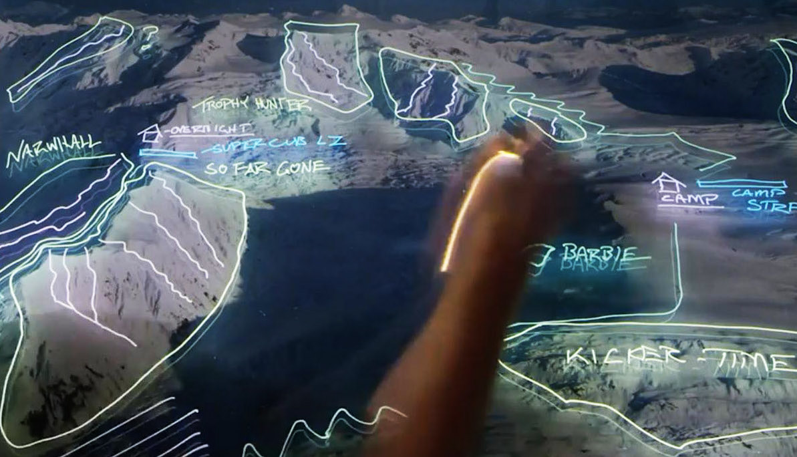

The best scene in The Fourth Phase, the new 92-minute snowboarding film starring Travis Rice, does not feature a snowboard. The setting is Russia. Rice, along with fellow snowboarders Mark Landvik and Eric Jackson, has been holed up along with two helicopter pilots for over four weeks in a cabin, waiting for a break in the weather. They are about to lose their minds.
Hailing from Alaska, with big mountains and deep snow in his blood. He consistently brings powerful riding on-mountain and levity and fun off-mountain, making him Rice's go-to partner for adventure. He shares his off-hill craftsmanship including custom furniture and art with the world through N-Grained.
Born in Wyoming, as the son of a ski patroller, he has exhibited unmatched strength, skill and drive on the mountain from the time he could walk. He spends his time off-mountain developing the Supernatural contest series, working with Asymbol Gallery, and finding adventure on water.
A Crowley Lake, California native, he has snowboarding engrained his blood. Coming up into the big mountains with his older brother John, he is full of adventure and wonderment. That sense of adventure took the Jackson "Brothers on the Run" from Alaska to Chile on the road trip of a lifetime.
The cabin is in Kamchatka, just a few hundred miles west of the Aleutian Islands tip of Alaska, one of the most inhospitable places on earth. Overlooking their cabin, which is built atop pylons planted deep in the Russian snow, a volcano spews black ash into the gray sky. They can’t snowboard – the mountains there are covered with a thin layer of ice, and the helicopter can’t get to the mountains of the nearby Kuril Islands, what with the high winds of this month-long, near unbelievable low-pressure system. They try surfing, dipping in the frigid Pacific waters nearby to catch a swell, but their limbs soon go numb (and Landvik can’t surf anyway).
Left with nothing else to do, the three extreme athletes slowly descend into madness. The film cuts to Landvik, who has suddenly sprouted a twirling blonde mustache. He stares into the camera, his eyes wide, snow flecked across his face and covering his Russian wool hat. He screams.
Mark Landvik after 4 weeks in a Russian cabin.
The music of Kishi Bashi, who wrote and performed an original score for the film, swells. Smith, Jackson and Landvik are all sprinting now, pushing a toboggan and leaping into the air like crazed animals through the deep drifts. These three men are not exactly known for their zen-like calm, and after a month in the Russian islands here in this desolate corner of the earth, they’ve snapped. This continues on, and on, beyond just a short interstitial between shred sessions; this is a major passage in the film. We cut to the cabin, and a title card tells us four weeks have passed. One month. The men whisper to the camera, cursing their luck, cursing God. Rumors fly, about each other, about when things will improve, about the weather.
You are watching a snowboard film, an exercise that comes with expectations. Most people watch these things to see cool athletes perform sweet tricks with some jamming tunes on in the background. And yet, for near half an hour in a 90-minute film, no one snowboards. Which may lead you to ask: Is this even a snowboarding film? And if it isn’t, what, exactly, is it?
The Fourth Phase premiered worldwide Sunday night via Red Bull TV, the company’s online streaming service, for free, available for anyone with an internet connection to watch around the world. It is now available on iTunes and Amazon and anywhere else you can buy high quality extreme content out on the internet. The film is created by and stars Rice, the 33-year-old snowboarder whose name is often prefixed with the world “legendary.” Rice is a pioneer in the world of big mountain snowboarding, the man who, perhaps more than anyone else alive, has pushed the sport higher, into ever more terrifying places. If Shaun White is the king of the halfpipe, Rice is the king of the untouched, 11,000-foot-high mountain ridge.
(Not that Rice is a stranger to the competition world – he burst onto the scene in 2001 when he, an unknown 18-year-old punk from Jackson Hole, showed up at Snowboarder Magazine’s Superpark event uninvited and promptly started throwing down backside rodeos over a 100-foot gap, something no one else at the competition would have even dreamed of attempting. He’s since won a few competitions and an X Games gold in slopestyle, but for the most part, he’s moved on from judge’s scorecards, instead finding satisfaction in finding lines down the most terrifying mountains on earth.)
In person, Rice is friendly, but has an intensity and focus you don’t find much in top-level snowboarders, who tend to operate more on the Spicoli wavelength. He has large, expressive eyes and a wide smile. A thin scar carves the space between his eyebrows, a small-but-ever-present reminder of the damage he’s done to his body in the years he’s spent atop the sport.
The Fourth Phase serves as a spiritual sequel to the previous film The Art of Flight, which many at the time considered the most complete and visually arresting snowboard film ever made. The title The Fourth Phase is both a wink at the fact that it’s Rice’s fourth film, but also a reference to the so-called “fourth phase of water,” a theory espoused by University of Washington bioengineering professor Dr. Gerald Pollack that states that there exists a fourth stage of water beyond vapor, gas and liquid. The science is somewhat interesting and apparently quite controversial in the hydrological world, and despite reading up on it extensively I still can’t tell if Dr. Pollack has stumbled upon a profound breakthrough or if his theory is just a bit of particularly well-packaged pseudoscience meant to sell his book.
For his part, Rice doesn’t seem much to care, and despite Dr. Pollack providing several voice-overs, the film doesn’t get too bogged down in the science, instead choosing to focus on this “fourth phase” as a metaphor for our own limited understanding of the world. It also provides a structural hook for the film – Rice, inspired by the work of Dr. Pollack, begins reading more into the hydrological cycle, specifically the jet streams that form the weather patterns (read: snowfall) along his corner of the Earth: the northern Pacific. Under the guidance of Bryan Iguchi, the outdoorsman/poet/snowboarder/mystic/artist that acts as a sort of shaman for Rice, he maps out a journey that will have him follow this cycle, from his home in Jackson Hole, to Japan, up to Russia, then finally to Alaska, specifically a section of barely explored Alaskan mountain wilderness he has named “So Far Gone.”
Moutain range map where So Far Gone is located.
If all this sounds sort of hokey and ridiculous to you, I promise it’s not. Or at least, it’s not so much that it detracts from the movie. The mystical and/or scientific elements may inform the film’s direction, but Rice and director Jon “JK” Klaczkiewicz never get hung up in them, and the film moves briskly to set up the structure and also the central conflict at the heart of the film: The one between Rice and the planet he seems determined to conquer.
I first saw The Fourth Phase at its official New York City premiere, a swanky event held at The High Line Hotel in Chelsea and hosted by Red Bull. At a cocktail hour held in a courtyard, well-dressed and extremely good looking bartenders constructed bespoke cocktails that all featured Red Bull, a somewhat daunting task because no matter how many fresh fruit juices and sprigs of thyme they infused into the drinks it still ended up tasting exactly like Red Bull. One bartender spent upwards of five minutes working to craft a drink for me that tasted like someone had taken a Red Bull and vodka and melted a cherry popsicle into it.
The party’s attendees made up a fascinating blend of Manhattan tastemakers and Wyoming snowboard punks, and you could see the two groups orbit each other at the party, intermingling here and there before retreating to their respective teams. Event staff carried around VR headsets which allowed you to experience, for two minutes, what it felt like to be on the mountain with Rice. The virtual reality experience was wild and incredibly engrossing, and you could really look around and see Rice right there, behind you, hitting you with a high five as you descended a massive snow face atop a sheer mountain face. The second I took off the VR headset, however, I became disoriented, and had to find a tree to hold myself up on, scared that I was about to fall over. I was momentarily embarrassed until I looked up and noticed there was another guest holding on to the tree for the exact same reason. We nodded at one another, my brother in disorientation, then both returned to the party.
Red Bull is the big name in extreme sports right now, and while no one likes to talk about it much, the company is almost singlehandedly propping up a lot of the biggest names and projects in the business. (I asked Jason “Hondo” Newman, the former TransWorld online editor who moderated the Q&A panel at the premiere, what would happen if Red Bull decided to change marketing strategies and exit the world of extreme sports, and all he could do was grimace and shake his head.) The Fourth Phase exists because of the company; it was made as a partnership between Red Bull Media House and Brain Farm, the independent film company that made Rice’s previous film. As you look at the scope of the film, though, and consider its three-year film time and numerous locations, Kishi Bashi score and helicopters (so many helicopters) it’s clear why the financial clout of the energy drink company was needed to complete the project. Dolby, Toyota, DC, GoPro (the other big player in extreme sports sponsorship), Skullcandy, Quiksilver and several other companies are involved as sponsors as well.
If all this sounds sort of hokey and ridiculous to you, I promise it’s not. Or at least, it’s not so much that it detracts from the movie. The mystical and/or scientific elements may inform the film’s direction, but Rice and director Jon “JK” Klaczkiewicz never get hung up in them, and the film moves briskly to set up the structure and also the central conflict at the heart of the film: The one between Rice and the planet he seems determined to conquer. While the money flowing into the sport is somewhat limited, watching high-level snowboarding has never been easier. ESPN televises the X Games and other events, and now thanks to GoPro and HD iPhone cameras, snowboarders now regularly provide an onslaught of easily digestible content to YouTube, Vine, Twitter and all their other favorite social media services, nearly in perpetuity. If you want to see what any of the best snowboarders in the world are up to at any moment, it isn’t hard to do so.
Which is why it’s such an interesting time for Red Bull to bet on one of the most ambitious, and certainly one of the most expensive, snowboarding films ever made. At a time when snowboarding is both struggling to find new riders and is also a source for near endless content, Rice went “basically dark,” as he describes it, for the three years leading up to the film. There were whispers about a new movie, but no one knew much about it. Rice posted little (for him) to social media, shared no edits of his seasons. If the rest of the snowboarding world was going to quickly share every piece of content as quickly as it could, Rice would wait, out in that cabin in the Russian wilderness, until he had his masterpiece. And The Fourth Phase is a masterpiece.
It’s as visually arresting as any extreme sports film I’ve ever seen – director Klaczkiewicz manages to capture at once both the immense scope and the intricate detail of big mountain riding. He’ll zoom in, and linger, on a single fleck of ice resting upon the eyelash of Rice, then pull back with a crystalline aerial shot, and the scope will at once become clear – Rice is standing upon the crest of a cliff at the very top of the world. This back and forth between the grand and the infinitesimal, the sublime and the beautiful, is at the heart of the work, and Klaczkiewicz has a real eye for capturing those moments of beauty. The big air matters, yes. The back flips are, indeed, gnarly. But the moment I will most remember from the film is the arresting vision of a group of four riders, friends, riding down through a misty Japanese forest, and the camera pausing, if only for a moment, to capture a mitten touching the tip of an icicle-covered branch.

Kishi Bashi’s score is similarly grand. The multi-instrumentalist’s songs capture the energy, yes, but pull away when the film demands silence. If you want to see the film, I can’t stress enough the need for a good set of headphones or speakers – the thunderous whomp of a difficult trick landed, the spine-tingling scratch of a board edge across an icy mountain face, the thick phwop of a helicopter blade cutting through mountain air are all as important to enjoying the film as any visual. It is, more than any nausea-inducing VR experience could hope to be, immersive in this sense. Watching it, it’s hard to imagine you could be anywhere else on earth.
It is also, strangely, as much a film about not snowboarding as it is about snowboarding. Two of the biggest journeys in the film, to Russia and Alaska, are both failures. In Russia, after a month of waiting for the weather to change and going through that mental collapse described above, the riders finally get in the helicopter and fly to the Kuril Islands … and are immediately detained by Russian authorities, who care not that they had obtained all the proper paperwork to be there. The three riders pack up, dejected, and head to Alaska, to the so-called “So Far Gone” section of protected mountains … and find that the heavy snow they’d all been expecting isn’t there. It’d been the warmest winter anyone can remember, and the deep powder they’d dreamed of had been replaced by sheer rock faces. (Global warming is never explicitly discussed in the film, as the filmmakers seem more concerned with Rice’s interior journey, but it hovers around the film, always, just offscreen.)
Rice seems undaunted by the awful conditions in Alaska, eager to press on, and in this moment, the films transitions into something I’ve never quite seen before in an extreme sports movie. Rice, the righteous and badass hero of the film up to this moment, is suddenly cast in a new light. His desire to conquer these moments is no longer brave; it’s beginning to look arrogant.
Landvik, one of Rice’s oldest friends, quits, broken down after weeks after weeks of disappointment and uncomfortable with the conditions in Alaska that Rice seems bent on overcoming. Rice says he understands, but can barely hide his disdain. Jackson, the youngest of the three, stays on, but with a nervous trepidation. During one unforgettable moment the camera focuses on Jackson as he gazes upon Rice with a look that suggests both admiration and horror – he’s following this man, yes, but he’s clearly afraid of him. Rice has become Ahab in a backwards Red Bull cap, driven by a monomaniacal desire to get that next peak, to capture that next shot.
Rice never deteriorates into a full monster, and much of the last hour of the film seems to concern him coming to his own grips about what he is willing to try, and how far he is willing to go. I won’t spoil the ending, though I will say there is a moment which is as (literally, in this case) gut-wrenching as anything I’ve ever seen captured on film, a scene which brought the 250 people in attendance at the New York screening to a shocked, and sustained, silence.
Perhaps what’s most admirable about The Fourth Phase isn’t that it’s a wildly ambitious and expensive snowboarding film at a time when making a snowboarding film has never been cheaper or easier to do. It isn’t the excellent score, or the editing, or the brand integration (which, it has to be said, is rampant), or even the fact that people spent three years creating a film about a sport that is struggling to remain relevant.
What’s most admirable is that this film refuses to get to any easy answers. It asks big questions, yes. Many extreme sports films ask these big questions, about the meaning of life, about our relationship with the planet, but their answer is inevitable and always the same: You just gotta go out and ride, man. That’s the big solution that is offered by all these films, a catch-all answer to all of life’s problems, the deep and dark lie that by simply strapping yourself to a board and sliding down a cold mountain you will find all the answers you need.
The Fourth Phase pays a little lip service to this idea at the end of the film, with a gratuitous scene of the gang riding back home in Jackson and a funny credit-roll blooper reel showing them all having fun. But the last, post-credit shot undermines all of that, which (again, without spoiling anything) shows that Rice has really learned nothing at all. He will continue to push to the tops of these mountains, for reasons he can barely begin to articulate, and he will continue to look death in the face and drag these fellow riders up there with him, riders who are all a little scared of him but at the same time sort of need him, because without Rice they’d all just be launching themselves off kickers in Park City and appearing on ESPN every couple years and getting wasted at house parties with those same old friends. This is the central idea at the heart of The Fourth Phase, a film that begins as something about water and by the end is about hubris and pride, about our collective need for extraordinary people who are willing to push us where we don’t want to go, and the psychic and physical costs that come with being a person like that. There is a scene toward the end of The Fourth Phase when, after missing out on their first attempt at “So Far Gone,” Rice and Jackson are helicoptered to the top of a craggy peak at a nearby range in Alaska. Landvik is gone. They have been waiting over a month for this moment, the chance to get back on the mountain, to hurl themselves into the abyss atop nothing but a plank of laminated fiberglass and wood. The helicopter dumps Jackson off in a drift of snow, and he sits in it, then stares up at the peaks above him, cut clean from the cold air, jagged spires of death that he will shortly try to conquer. Rice is about to throw himself down one of these spires, and then it will be Jackson’s turn to follow him, to find his own peak, and to try something no man has ever tried before. “I’m scared,” Jackson says. “Finally.”